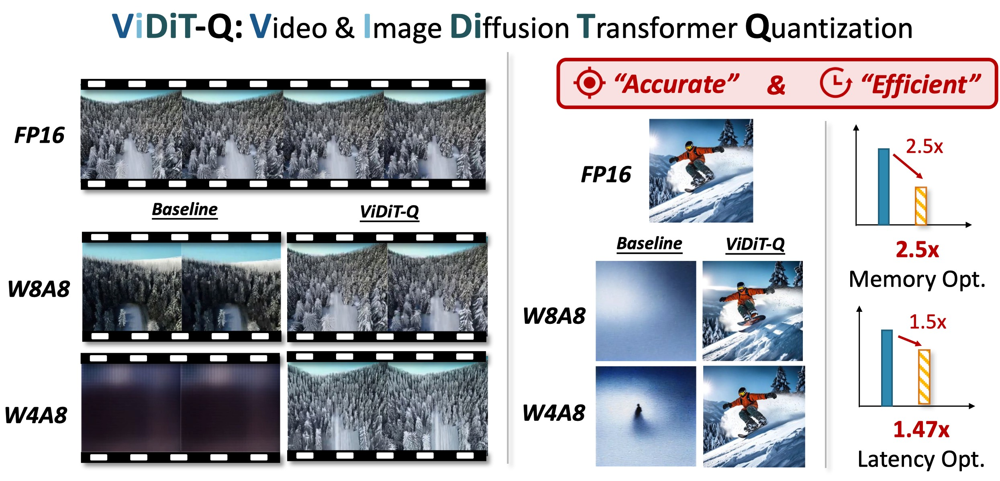

We introduce ViDiT-Q, a quantization method specialized for diffusion transformers. For popular large-scale models (e.g., open-sora, Latte, Pixart-α, Pixart-Σ) for the video and image generation task, ViDiT-Q could achieve W8A8 quantization without metric degradation, and W4A8 without notable visual quality degradation.
Diffusion transformers (DiTs) have exhibited remarkable performance in visual generation tasks, such as generating realistic images or videos based on textual instructions. However, larger model sizes and multi-frame processing for video generation lead to increased computational and memory costs, posing challenges for practical deployment on edge devices. Post-Training Quantization (PTQ) is an effective method for reducing memory costs and computational complexity.
When quantizing diffusion transformers, we find that applying existing diffusion quantization methods designed for U-Net faces challenges in preserving quality. After analyzing the major challenges for quantizing diffusion transformers, we design an improved quantization scheme: "ViDiT-Q": Video and Image Diffusion Transformer Quantization) to address these issues.
Furthermore, we identify highly sensitive layers and timesteps hinder quantization for lower bit-widths. To tackle this, we improve ViDiT-Q with a novel metric-decoupled mixed-precision quantization method (ViDiT-Q-MP).
We validate the effectiveness of ViDiT-Q across a variety of text-to-image and video models. While baseline quantization methods fail at W8A8 and produce unreadable content at W4A8, ViDiT-Q achieves lossless W8A8 quantization. ViDiT-Q-MP achieves W4A8 with negligible visual quality degradation, resulting in a 2.5x memory optimization and a 1.5x latency speedup.
When applying existing diffusion quantization methods tailored for U-Net-based CNNs to DiTs, we witness notable quality degradation. Some "unnatural contents" appears for W8A8 quantization (unexpected fins for the turtle). For W4A8 quantization, the quantized model completly fails and produces blank images. To address these issues, we design improved quantization scheme: "ViDiT-Q". For further reducing bit-width to W6A6 and W4A8, we design mixed precision version "ViDiT-Q-MP".
We conduct preliminary experiments to delve into the reasons for quantization failure by visualizing the data distribution. We conclude the key unique challenge of DiT quantization lies in the data variance in multiple levels. While existing quantization methods adopt fixed and coarse-grained quantization parameters, which struggle to handle highly variant data. We summarize the data variance in 4 following levels:
The primary distinction between the DiT and previous U-Net-based models are the feature extraction operator (Convolution vs. Linear). U-Net employs convolution layers that conducts local aggregation of neighboring pixel featrues. Therefore, these pixel features should have the same quantization parameters (tensor-wise quantization parameter). For DiTs's linear layers, the computation for each visual token is indepdent. Threfore, token-wise quantization parameter is applicable.
The "CFG-wise variance" and "Timestep-wise variance" are two unique challenge for diffusion models. Inspired by prior language model quantization methods, we propose to use the "Dynamic Quantization" that calculates the quantization parameters online for activation. It naturally solves the CFG-wise and timestep-wise variance.
The channel balancing problem could be alleviated with channel balancing quantization techniques (e.g., SmoothQuant). By introducing a channel-wise balancing mask "s" that is divided by weight and multiplied by activation. It migrates the difficulty of weight quantization to activation. For DiT quantization, we witness it still yields unsatisfactory performance. We further discover that the activation channel-wise distribution changes significantly across timesteps. We improve the channel balancing with "timestep-aware", and propose to use different masks for different timesteps.
For lower bit-width quantization, we discover that degradation is still witnessed for ViDiT-Q. We discover that the quantization is "bottlenecked" by some layer (unquantizing one layer improves from blank image to readable content).
An intuitive solution for highly sensitive layers is assigning higher bit-width for them. We observe that simple Mean-Squared-Error(MSE)-based quantiation sensitivity measurement lacks precision. We introduce an improved metric-decoupled sensitivity analysis method that considers quantization's influence on multiple aspects.
VBench is a comprehensive benchmark suite for video generation. We evaluate the quantized model's generation quality from various perspective as follows.
ViDiT-Q W8A8 quantization achieves comparable performance with the FP16. W4A8-MP quantiation only incurs notable performance decay, outtperforming the baseline W8A8 quantization.
We provide some qualitative video examples as follows:
We apply ViDiT-Q to the open-sora and Latte models on UCF-101 datasets.
We compare existing quantization techniques for open-sora model on its exmample prompts.
We apply ViDiT-Q to the PixArt-α and PixArt-Σ models on the COCO annotations.
We test the efficiency improvement of ViDiT-Q quantization with hardware profiling. Due to lack of existing open-source dynamic quantization GPU kenrel, we measure the latency with normal INT GPU kernel, and consider the overhead dynamic quantizaiton introduces. ViDiT-Q could achive 2-3x memory compression rate, and 1.4x latency speedup with W8A8/W4A8.
We conduct ablation studies for open-sora text-to-video generation for W4A8 quantization.
We provide more examples of comparison between naive and timestep-aware channel balancing.
@misc{zhao2024viditq,
title={ViDiT-Q: Efficient and Accurate Quantization of Diffusion Transformers for Image and Video Generation},
author={Tianchen Zhao and Tongcheng Fang and Enshu Liu and Wan Rui and Widyadewi Soedarmadji and Shiyao Li and Zinan Lin and Guohao Dai and Shengen Yan and Huazhong Yang and Xuefei Ning and Yu Wang},
year={2024},
eprint={2406.02540},
archivePrefix={arXiv},
primaryClass={cs.CV}
} ViDiT-Q: Efficient and Accurate Quantization of Diffusion Transformers for Image and Video Generation
ViDiT-Q: Efficient and Accurate Quantization of Diffusion Transformers for Image and Video Generation